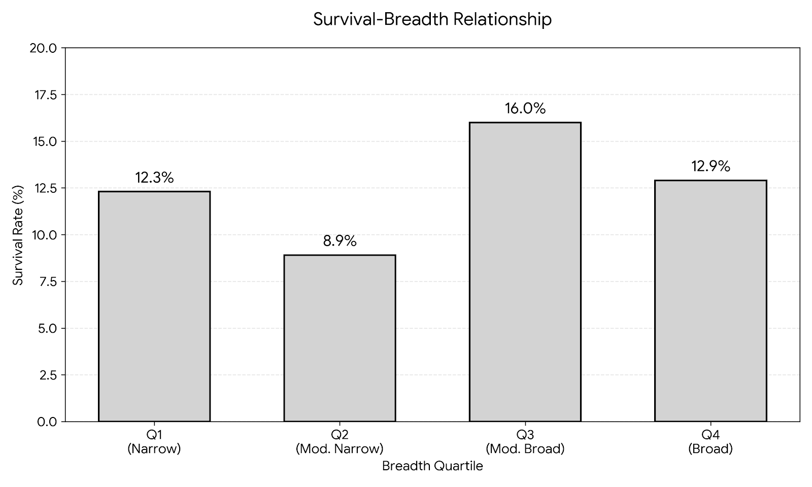

I
¶1-6
(6)
WHY $ ≠ G?
C→F→R
¶7-15
(9)
HOW trapped?
A→R→G
¶16-24
(9)
WHAT grows?
vs Sustainable Position
P
¶25-27
(3)
WHEN commit?
C
¶28-29
(2)
SO WHAT?
G Gospel
정 (利)
정
¶1
Cash=oxygen 통념
정+수
¶7
Capital-enables-learning
정+수
¶16
Sustainable Position
경
¶25
When to commit?
—
P Puzzle
수 (見)
수
¶2
ρ(F,G)=−0.196***
정+수
¶7
dR/dF < 0 왜?
정+수
¶16
Movers 1.82×
경+수
¶25
Doubly-binded
—
S Solution
찰 (思)
찰
¶3
(+)×(−)=(−) 분해
찰
¶8
Golden cage mechanism
+Self-selection
⚠️Q3: 직접 vs 매개효과
+Self-selection
⚠️Q3: 직접 vs 매개효과
찰
¶17
Partial commitment
경+찰
¶26
4 Tools: CSCE
Market∥Ops growth
Market∥Ops growth
경
¶28
Commit to reposition
T Table
수 (見)
수
¶4
Variables (C,F,A,B,R,G)
수
¶10-13
Theory: C-B, F, R
μ(1−μ)<ε/B
μ(1−μ)<ε/B
수
¶19-21
Theory: A, R, G
Mover types
Mover types
경+찰
¶26
Cap-Seg-Col-Eval
—
F Figure
영 (見)
영
Fig-GC
Golden Cage 🐦

영
Fig-I
¶8-9 Capital Paradox
 = -0.174***")
영
Fig-ARG+CFR
¶14,21,22


영
Fig-P1,P2
¶26-27 CSCE


—
M Map
찰 (思)
찰
¶6
Thesis structure
I→CFR→FRG→P→C
I→CFR→FRG→P→C
찰
¶9
CFR module map
LTE framework
LTE framework
찰
¶18
FRG module map
경+찰
¶26
Market∥Ops map
찰
¶29
Limitations & Future
E Example
스 (見)
—
스
¶14-15
Segway, Theranos
Nikola cases
Nikola cases
스
¶22-24
Tesla vs Better Place
Robustness checks
Robustness checks
경+스
¶27
AV cases: Motional
Aurora, Nuro, Waymo
Aurora, Nuro, Waymo
—